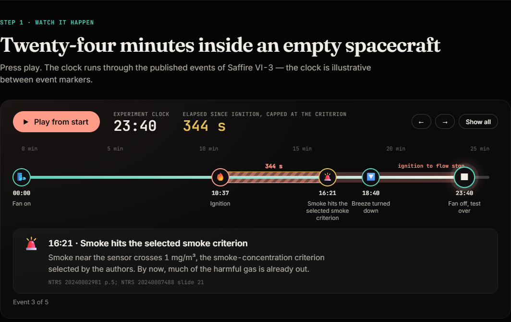

Which NASA experiments actually support the conditions you want to study?
GeNAIus turns fire experiments into traceable research evidence.
Team GeNAIus Ümit Sencer · Ömer Faruk Ayhan · Azo İsmail Sercan Çintosun · Ekin Ali Karahan Challenge: Flame in Freefall
Four evidence types. Never one undifferentiated answer.
Research context: NASA NTRS 20240002981. Independent research prototype; not a NASA-endorsed safety tool. Original vector diagram; AI-assisted preparation disclosed in source notes.
GeNAIus / NASA data is the foundation
02 / 07
Relevance · From archive to usable records
Different experiments. Different questions.
We preserve the physical context instead of pooling incompatible evidence.
PSI-25 · BASS-II · Solid materials
129 test runs
107 unique sample IDs. Material, geometry and initial/final gas readings.
PSI-69 · FLEX · Liquid droplets
274 test runs
Fuel, atmosphere, pressure and initial diameter. Burning-rate and experiment-end outcomes.
403 core runs power table analysis. A 24-study catalog supports discovery.
Separate supporting modules: CFI · SAFFIRE-II · published SAFFIRE IV-VI results · SAME/SAME-2 smoke evidence.
Actual product · each point is a recorded BASS-II test.
Missing readings stay missing. Measurement comparisons are not safety rankings.
NASA PSI-25 CSV and ReadMe; frontend/js/lab.js and stats.js; src/genaius/analytics.py and data/query.py. Raw values and initial/final status remain distinct. SHA-256 establishes file identity, not scientific validity.
GeNAIus / Fire Animation & Scenario Check
04 / 07
Creative contribution · Make the limits visible
A nearby test is not the same test.
“Was PMMA at 34% oxygen tested for a Moon habitat?”
GAP in our indexed core.
This is not a claim that NASA has never tested the condition.
The animation explains the concept; it is not CFD or a measured test replay.
Actual product · nearest records retain their condition differences.
TESTED
A recorded test matches all supplied conditions.
PARTIAL
Fuel and oxygen match; other conditions differ or are unrecorded.
GAP
No fuel/material and oxygen match in the indexed core.
scenario_check.py: strict match ±0.05 O₂ percentage points, ±0.01 atm. Fire's nearby FLEX reference window starts at ±2 O₂ points / ±0.1 atm and may widen; it does not determine TESTED status. All labels describe indexed evidence, not safety.
GeNAIus / SAFFIRE Case Study
05 / 07
A concrete case · Uncrewed Cygnus spacecraft
344 seconds that need context.
Saffire VI-3: connect published fire and smoke observations.
637 s
Ignition
+344 s derived
981 s
Smoke criterion
The authors selected 1 mg/m³ as a smoke-concentration criterion.
This interval is not an operational alarm delay or a crew-exposure calculation.

Actual product · conditions, gas results and event sources stay linked.
Public project: github.com/Umitsencer/genaius-flame-in-freefall · Source references: docs/DATA_AND_MODELS.md · AI disclosure: docs/AI_USE.md. Independent research prototype, not operational fire protection or safety certification.